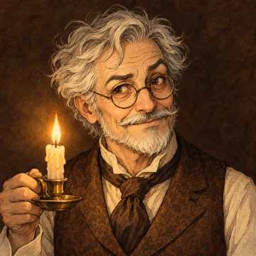
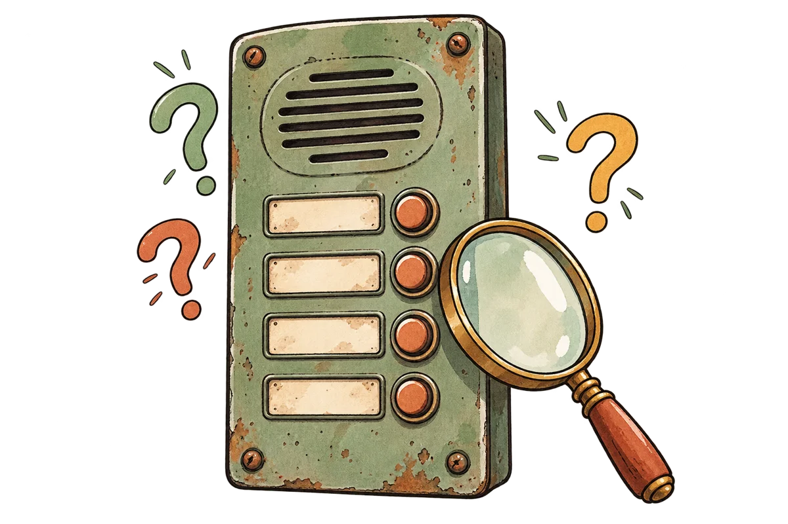
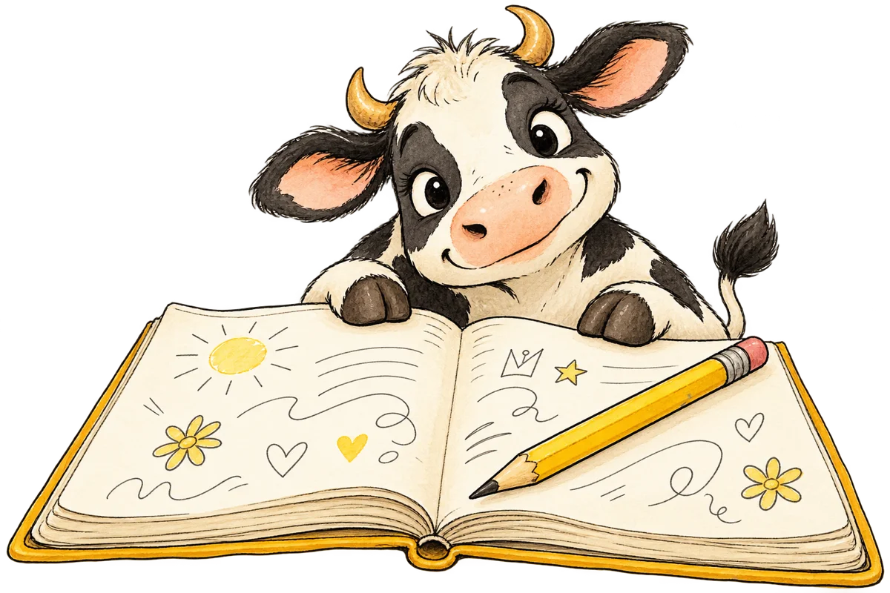
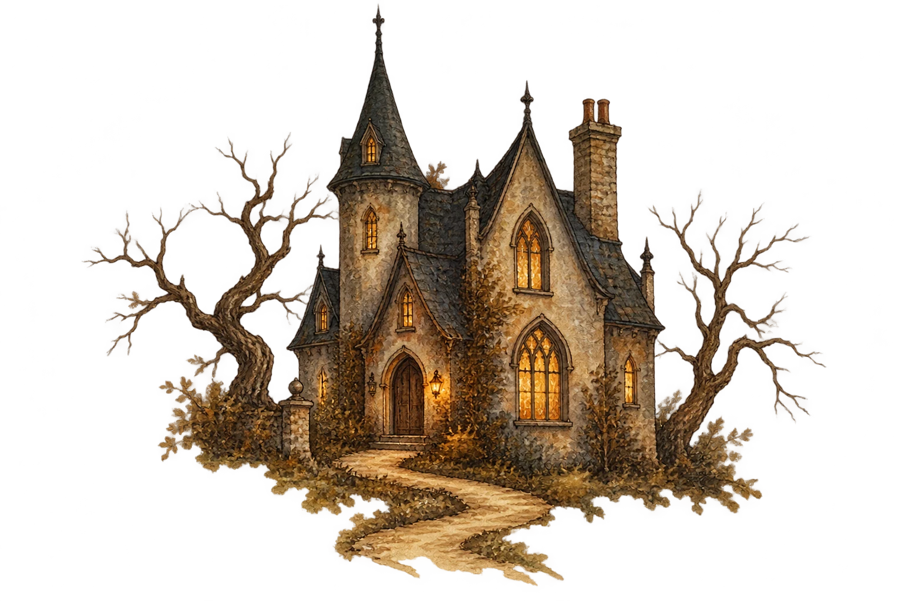

Книжная серия
У каждой книги — свои загадки. Выберите историю и проверьте, какие детали остались в вашей памяти.


Миша, Егорка и приключения на каждом шагу. Смешные недоразумения, дружба и неожиданные открытия.
Открыть викторину
Два мастера розыгрышей, школьные хитрости и один большой план. Что вы запомнили?
Открыть викторину
Дядюшка Монтегю, Женщина в белом и Чёрный корабль. Три книги — одна встреча с тайной.
Новая книга, новые герои и ещё одна история, которую захочется вспомнить.
Викторина готовится
Читайте с удовольствием. Играйте в своём темпе.